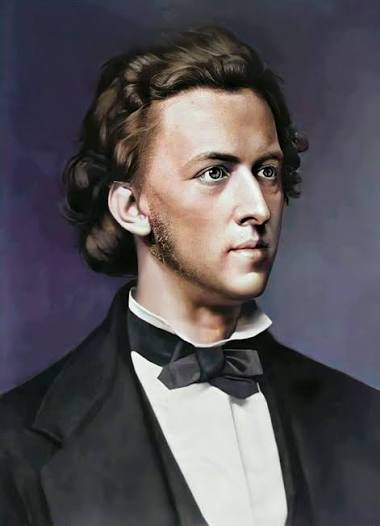

Фредерик Шопен (1810–1849) — выдающийся польский композитор и пианист-виртуоз, главный «поэт фортепиано» эпохи романтизма. Родился в Польше, но из-за восстания 1830 года был вынужден обосноваться в Париже. Всю жизнь тосковал по родине, создавал гениальную музыку и боролся с тяжёлой болезнью, уйдя из жизни в возрасте 39 лет.

2. Главные сочинения
Ноктюрны: лиричные и глубокие пьесы (например, Ноктюрн ми-бемоль мажор).